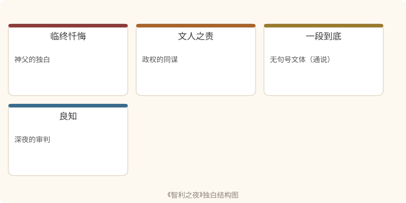

智利之夜
一、基本信息
| 作者 | 罗贝托·波拉尼奥 |
|---|---|
| 成书/出版 | 2000年（Britannica：By Night in Chile (2000)——B251） Roberto Bolano — Encyclopaedia Britannica（百科全书） |
| 国别/地区 | 智利 |
| 时代 | 现当代 · 21世纪 |
| 体裁 | 中篇小说 |
| 语言 | 西班牙语 |

《智利之夜》独白结构图（主题·结构图）
二、创作背景
Britannica（B251）：works 谱系载'By Night in Chile (2000)'（B251 作者页定位，详见 huangyezhentan 条核对）。
文体（通说待核）：一段独白——垂死神父乌雷塔的临终忏悔（全文几乎无句号）。
三、内容脉络
神父的独白：诗人聚会、皮诺切特政权下的'文人之责'（通说待核）。
四、主要人物表
| 人物 | 身份 | 说明 |
|---|---|---|
| 乌雷塔 | 神父·文学批评家 | 独白者（通说待核） |
五、主题与艺术特点
- 文人与独裁的合谋（通说待核）。
- 一段到底的独白体（通说）。
- '智利之夜'的良知审判（通说待核）。
六、影响与评论
- Britannica：波拉尼奥作品谱系（B251 作者页口径）。
Roberto Bolano — Encyclopaedia Britannica（百科全书） - 作者页：波拉尼奥21世纪初地位（B251 作者级）。
Roberto Bolano — Encyclopaedia Britannica（百科全书）
七、阅读建议
难点
- 无句读的长段独白。
- 智利政变史。
- 《智利之夜》（上海人民出版社，通说待核）。
- 西班牙文原版（Anagrama）。
《荒野侦探》《2666》之外的短体入口。
八、待核实
- 2000年出版（Anagrama说）核对。
- 乌雷塔人名核对。
- 独白无句号文体待核。
本页主要来源
罗贝托·波拉尼奥的其他收录作品：荒野侦探